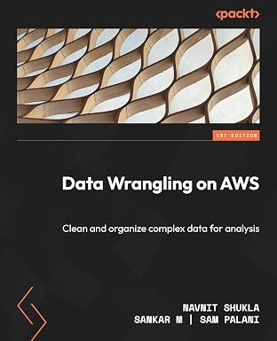
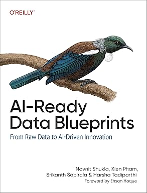

Author · Speaker · Technologist
Building AI-ready data systems at Snowflake. Published author of two Oreilly and Packt books. AWS Big Data Blog contributor. YouTube educator. Conference speaker at re:Invent, PASS, and beyond.
I'm a Principal Partner Data Cloud Architect at Snowflake, where I help organizations build AI-ready data foundations that power real-world AI and ML applications. With over 16 years of progressive experience across cloud, data, and AI platforms, I've guided enterprises — from Fortune 500s to high-growth startups — on architecting scalable, intelligent data systems.
Previously at AWS as a Senior Solutions Architect for Analytics & AI/ML, I authored 24 articles on the AWS Big Data Blog with over 200,000+ page views. I lead technical content on my YouTube channel Cloud and Coffee with Navnit and mentor emerging technologists on Topmate (Top 5% mentor).
Two books with O'Reilly and Packt Publishing covering modern data engineering and AI-ready data architectures.

Data Wrangling on AWSA comprehensive guide to cleaning and organizing complex data for analysis using AWS services including Glue, Athena, DataBrew, and more. Covers end-to-end data preparation workflows, quality checks, and enterprise-scale patterns.

AI-Ready Data BlueprintsFrom Raw Data to AI-Driven Innovation — a strategic and technical blueprint for building data foundations that power modern AI. Covers data architecture patterns, feature engineering, governance, and MLOps for production AI systems.
10+ conference presentations across data engineering, AI, and cloud platforms.
Technology simplified — from deep-dive cloud architecture sessions to beginner-friendly GenAI tutorials, all delivered over a virtual coffee. Covering Snowflake, AWS, GenAI, data engineering, and career growth.
23 AWS Big Data Blog articles with 165,000+ page views, plus strategic insights on Medium and Substack.
In-depth technical guides on AWS data services: Apache Iceberg, AWS Glue, Amazon Redshift, Amazon Athena, OpenSearch, SageMaker, and more. Practical, production-ready patterns for data engineers and architects.
Strategic perspectives on building AI-ready data foundations, GenAI adoption patterns, data architecture best practices, and insights from the AWS re:Invent conference floor. Written for data leaders and practitioners.
Weekly drops on cloud computing, data engineering, and AI — delivered straight to your inbox. Practical insights, curated reads, and behind-the-scenes from conferences, book writing, and the Snowflake ecosystem.
Hands-on learning resources for cloud, data engineering, and AI — from books to professional certificates.
The companion website for the book AI-Ready Data Blueprints: From Raw Data to AI-Driven Innovation. Explore reference architectures, code samples, and supplementary resources for building production AI data stacks. Perfect for data engineers, architects, and AI practitioners looking to apply the book's blueprints in real-world systems.
Visit AI-Ready Data BlueprintsFree and premium courses on GenAI, cloud computing, and data engineering. From Gen AI for Absolute Beginners to hands-on Snowflake and AWS labs — learn at your own pace with practical, project-based content.
A DeepLearning.AI professional certificate on Coursera covering the complete data engineering lifecycle — from data ingestion and transformation to orchestration, serving, and MLOps. Co-developed with industry experts to prepare the next generation of data engineers.
Whether you're interested in speaking engagements, book collaborations, mentorship, or just want to talk data and AI — I'd love to hear from you.